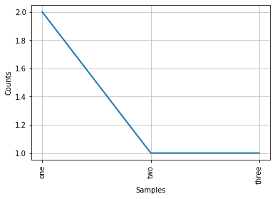
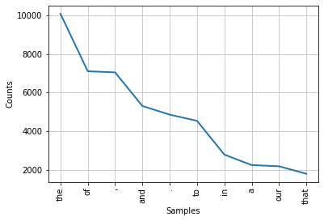

Keyword analysis: Donald Trump’s speeches¶
Reference corpus & frequency distribution¶
from nltk.corpus import inaugural
inaugural.fileids()
['1789-Washington.txt',
'1793-Washington.txt',
'1797-Adams.txt',
'1801-Jefferson.txt',
'1805-Jefferson.txt',
'1809-Madison.txt',
'1813-Madison.txt',
'1817-Monroe.txt',
'1821-Monroe.txt',
'1825-Adams.txt',
'1829-Jackson.txt',
'1833-Jackson.txt',
'1837-VanBuren.txt',
'1841-Harrison.txt',
'1845-Polk.txt',
'1849-Taylor.txt',
'1853-Pierce.txt',
'1857-Buchanan.txt',
'1861-Lincoln.txt',
'1865-Lincoln.txt',
'1869-Grant.txt',
'1873-Grant.txt',
'1877-Hayes.txt',
'1881-Garfield.txt',
'1885-Cleveland.txt',
'1889-Harrison.txt',
'1893-Cleveland.txt',
'1897-McKinley.txt',
'1901-McKinley.txt',
'1905-Roosevelt.txt',
'1909-Taft.txt',
'1913-Wilson.txt',
'1917-Wilson.txt',
'1921-Harding.txt',
'1925-Coolidge.txt',
'1929-Hoover.txt',
'1933-Roosevelt.txt',
'1937-Roosevelt.txt',
'1941-Roosevelt.txt',
'1945-Roosevelt.txt',
'1949-Truman.txt',
'1953-Eisenhower.txt',
'1957-Eisenhower.txt',
'1961-Kennedy.txt',
'1965-Johnson.txt',
'1969-Nixon.txt',
'1973-Nixon.txt',
'1977-Carter.txt',
'1981-Reagan.txt',
'1985-Reagan.txt',
'1989-Bush.txt',
'1993-Clinton.txt',
'1997-Clinton.txt',
'2001-Bush.txt',
'2005-Bush.txt',
'2009-Obama.txt',
'2013-Obama.txt',
'2017-Trump.txt']
inaugural.words()
['Fellow', '-', 'Citizens', 'of', 'the', 'Senate', ...]
from nltk import FreqDist
FreqDist(["one", "two", "three", "one"])
FreqDist({'one': 2, 'two': 1, 'three': 1})
fd = FreqDist(["one", "two", "three", "one"])
fd["one"]
2
fd.N()
4
fd.freq("one")
0.5
fd.most_common()
[('one', 2), ('two', 1), ('three', 1)]
fd.plot()

<AxesSubplot:xlabel='Samples', ylabel='Counts'>
reference_fd = FreqDist(inaugural.words())
inaugural.words().lower()
---------------------------------------------------------------------------
AttributeError Traceback (most recent call last)
/tmp/ipykernel_56977/2471470118.py in <module>
----> 1 inaugural.words().lower()
AttributeError: 'ConcatenatedCorpusView' object has no attribute 'lower'
reference_fd = FreqDist(
word.casefold()
for word in inaugural.words()
# if word.isalpha()
)
reference_fd.most_common(10)
[('the', 10081),
('of', 7103),
(',', 7045),
('and', 5304),
('.', 4856),
('to', 4535),
('in', 2784),
('a', 2245),
('our', 2182),
('that', 1793)]
reference_fd.plot(10)

<AxesSubplot:xlabel='Samples', ylabel='Counts'>
trump = """
Chief Justice Roberts, President Carter, President Clinton, President Bush, President Obama, fellow Americans, and people of the world: thank you.
We, the citizens of America, are now joined in a great national effort to rebuild our country and to restore its promise for all of our people.
Together, we will determine the course of America and the world for years to come.
We will face challenges. We will confront hardships. But we will get the job done.
Every four years, we gather on these steps to carry out the orderly and peaceful transfer of power, and we are grateful to President Obama and First Lady Michelle Obama for their gracious aid throughout this transition. They have been magnificent.
Today’s ceremony, however, has very special meaning. Because today we are not merely transferring power from one Administration to another, or from one party to another – but we are transferring power from Washington, D.C. and giving it back to you, the American People.
For too long, a small group in our nation’s Capital has reaped the rewards of government while the people have borne the cost.
Washington flourished – but the people did not share in its wealth.
Politicians prospered – but the jobs left, and the factories closed.
The establishment protected itself, but not the citizens of our country.
Their victories have not been your victories; their triumphs have not been your triumphs; and while they celebrated in our nation’s Capital, there was little to celebrate for struggling families all across our land.
That all changes – starting right here, and right now, because this moment is your moment: it belongs to you.
It belongs to everyone gathered here today and everyone watching all across America.
This is your day. This is your celebration.
And this, the United States of America, is your country.
What truly matters is not which party controls our government, but whether our government is controlled by the people.
January 20th 2017, will be remembered as the day the people became the rulers of this nation again.
The forgotten men and women of our country will be forgotten no longer.
Everyone is listening to you now.
You came by the tens of millions to become part of a historic movement the likes of which the world has never seen before.
At the center of this movement is a crucial conviction: that a nation exists to serve its citizens.
Americans want great schools for their children, safe neighborhoods for their families, and good jobs for themselves.
These are the just and reasonable demands of a righteous public.
But for too many of our citizens, a different reality exists: Mothers and children trapped in poverty in our inner cities; rusted-out factories scattered like tombstones across the landscape of our nation; an education system, flush with cash, but which leaves our young and beautiful students deprived of knowledge; and the crime and gangs and drugs that have stolen too many lives and robbed our country of so much unrealized potential.
This American carnage stops right here and stops right now.
We are one nation – and their pain is our pain. Their dreams are our dreams; and their success will be our success. We share one heart, one home, and one glorious destiny.
The oath of office I take today is an oath of allegiance to all Americans.
For many decades, we’ve enriched foreign industry at the expense of American industry;
Subsidized the armies of other countries while allowing for the very sad depletion of our military;
We’ve defended other nation’s borders while refusing to defend our own;
And spent trillions of dollars overseas while America’s infrastructure has fallen into disrepair and decay.
We’ve made other countries rich while the wealth, strength, and confidence of our country has disappeared over the horizon.
One by one, the factories shuttered and left our shores, with not even a thought about the millions upon millions of American workers left behind.
The wealth of our middle class has been ripped from their homes and then redistributed across the entire world.
But that is the past. And now we are looking only to the future.
We assembled here today are issuing a new decree to be heard in every city, in every foreign capital, and in every hall of power.
From this day forward, a new vision will govern our land.
From this moment on, it’s going to be America First.
Every decision on trade, on taxes, on immigration, on foreign affairs, will be made to benefit American workers and American families.
We must protect our borders from the ravages of other countries making our products, stealing our companies, and destroying our jobs. Protection will lead to great prosperity and strength.
I will fight for you with every breath in my body – and I will never, ever let you down.
America will start winning again, winning like never before.
We will bring back our jobs. We will bring back our borders. We will bring back our wealth. And we will bring back our dreams.
We will build new roads, and highways, and bridges, and airports, and tunnels, and railways all across our wonderful nation.
We will get our people off of welfare and back to work – rebuilding our country with American hands and American labor.
We will follow two simple rules: Buy American and Hire American.
We will seek friendship and goodwill with the nations of the world – but we do so with the understanding that it is the right of all nations to put their own interests first.
We do not seek to impose our way of life on anyone, but rather to let it shine as an example for everyone to follow.
We will reinforce old alliances and form new ones – and unite the civilized world against Radical Islamic Terrorism, which we will eradicate completely from the face of the Earth.
At the bedrock of our politics will be a total allegiance to the United States of America, and through our loyalty to our country, we will rediscover our loyalty to each other.
When you open your heart to patriotism, there is no room for prejudice.
The Bible tells us, “how good and pleasant it is when God’s people live together in unity.”
We must speak our minds openly, debate our disagreements honestly, but always pursue solidarity.
When America is united, America is totally unstoppable.
There should be no fear – we are protected, and we will always be protected.
We will be protected by the great men and women of our military and law enforcement and, most importantly, we are protected by God.
Finally, we must think big and dream even bigger.
In America, we understand that a nation is only living as long as it is striving.
We will no longer accept politicians who are all talk and no action – constantly complaining but never doing anything about it.
The time for empty talk is over.
Now arrives the hour of action.
Do not let anyone tell you it cannot be done. No challenge can match the heart and fight and spirit of America.
We will not fail. Our country will thrive and prosper again.
We stand at the birth of a new millennium, ready to unlock the mysteries of space, to free the Earth from the miseries of disease, and to harness the energies, industries and technologies of tomorrow.
A new national pride will stir our souls, lift our sights, and heal our divisions.
It is time to remember that old wisdom our soldiers will never forget: that whether we are black or brown or white, we all bleed the same red blood of patriots, we all enjoy the same glorious freedoms, and we all salute the same great American Flag.
And whether a child is born in the urban sprawl of Detroit or the windswept plains of Nebraska, they look up at the same night sky, they fill their heart with the same dreams, and they are infused with the breath of life by the same almighty Creator.
So to all Americans, in every city near and far, small and large, from mountain to mountain, and from ocean to ocean, hear these words:
You will never be ignored again.
Your voice, your hopes, and your dreams, will define our American destiny. And your courage and goodness and love will forever guide us along the way.
Together, We Will Make America Strong Again.
We Will Make America Wealthy Again.
We Will Make America Proud Again.
We Will Make America Safe Again.
And, Yes, Together, We Will Make America Great Again. Thank you, God Bless You, And God Bless America.
"""
%page -r trump
❄ |
text |
ref. corpus |
|---|---|---|
bigly |
270 |
2615 |
other words |
19937 |
120 748 715 |
prop_text = 270 / (270 + 19_937)
prop_text
0.01336170633938734
prop_ref = 2615 / (2615 + 120_748_715)
prop_ref
2.1656076169098925e-05
prop_text > prop_ref
True
from scipy.stats import chi2_contingency
chi2_contingency([[270, 19_937], [2615, 120_748_715]])
(149954.80206610577,
0.0,
1,
array([[4.82706410e-01, 2.02065173e+04],
[2.88451729e+03, 1.20748445e+08]]))
chi2_contingency([[270, 19_937], [2615, 120_748_715]])[1]
0.0
chi2_result = chi2_contingency([[270, 19_937], [2615, 120_748_715]])
p = chi2_result[1]
p < 0.05
True
from nltk import word_tokenize
trump_fd = FreqDist(
word.casefold()
for word in word_tokenize(trump)
# if word.isalpha()
)
trump_fd.most_common(10)
[(',', 95),
('.', 86),
('and', 74),
('the', 70),
('we', 49),
('of', 48),
('our', 48),
('will', 40),
('to', 37),
('is', 21)]
def is_keyword(word, target_fd, reference_fd):
target_freq = target_fd[word]
target_rest = target_fd.N() - target_freq
reference_freq = reference_fd[word]
reference_rest = reference_fd.N() - reference_freq
chi2_result = chi2_contingency(
[[target_freq, target_rest],
[reference_freq, reference_rest]]
)
p = chi2_result[1]
return target_fd.freq(word) > reference_fd.freq(word) and p < 0.05
trump_fd["and"]
74
trump_fd.N() - trump_fd["and"]
1590
def din(word, target_fd, reference_fd):
target_freq = target_fd.freq(word)
reference_freq = reference_fd.freq(word)
return 100 * (target_freq - reference_freq) / (target_freq + reference_freq)
For more on DIN (Difference INdex), see: https://kwords.korpus.cz/
for word in trump_fd.keys():
print(word)
break
chief
keywords = []
for word in trump_fd.keys():
if is_keyword(word, trump_fd, reference_fd):
word_din = din(word, trump_fd, reference_fd)
keywords.append((word_din, word))
len(keywords)
177
keywords
[(97.80273469738084, 'roberts'),
(66.98269164100009, 'president'),
(95.65322448979592, 'carter'),
(97.80273469738084, 'obama'),
(65.90560468709332, 'americans'),
(64.28364956401919, ':'),
(78.2226161652816, 'thank'),
(68.88842955794615, 'you'),
(22.9078612403631, '.'),
(43.331449924815, 'we'),
(76.0921570023243, 'america'),
(97.80273469738084, 'rebuild'),
(32.89320572096895, 'our'),
(43.62702249210978, 'country'),
(62.535738505357386, 'together'),
(59.51174372828367, 'will'),
(97.80273469738084, 'hardships'),
(95.65322448979592, 'get'),
(97.80273469738084, 'lady'),
(97.80273469738084, 'michelle'),
(63.05092014589975, 'today'),
(100.00000000000001, '’'),
(48.24477135479292, 's'),
(97.80273469738084, 'transferring'),
(47.39954637815924, 'one'),
(100.0, '–'),
(76.4757164315377, 'washington'),
(100.0, 'd.c.'),
(88.4843566175314, 'back'),
(73.77875827292783, 'american'),
(43.882087324579494, 'nation'),
(83.67717293343715, 'capital'),
(97.80273469738084, 'reaped'),
(72.80580491472013, 'while'),
(95.65322448979592, 'flourished'),
(81.36437656260405, 'wealth'),
(97.80273469738084, 'politicians'),
(93.54992925853905, 'prospered'),
(94.07150214091843, 'jobs'),
(81.82226457004485, 'left'),
(93.54992925853905, 'factories'),
(90.27712678324866, 'protected'),
(95.65322448979592, 'victories'),
(77.9024302554632, 'your'),
(91.49137440637124, 'triumphs'),
(88.81379788452044, 'families'),
(88.28724309526294, 'across'),
(95.65322448979592, 'starting'),
(58.1804031885922, 'right'),
(63.64371275474254, 'here'),
(74.76272975984226, 'moment'),
(84.61889238770743, 'belongs'),
(94.07150214091843, 'everyone'),
(93.54992925853905, 'gathered'),
(68.7565129714922, 'whether'),
(95.65322448979592, 'january'),
(97.80273469738084, '2017'),
(83.88561272903472, 'again'),
(88.4843566175314, 'forgotten'),
(74.76272975984227, 'longer'),
(97.80273469738084, 'listening'),
(74.19910030216047, 'millions'),
(91.49137440637124, 'movement'),
(97.80273469738084, 'likes'),
(60.245257889847906, 'never'),
(83.67717293343715, 'exists'),
(76.4757164315377, 'safe'),
(97.80273469738084, 'neighborhoods'),
(97.80273469738084, 'trapped'),
(95.65322448979592, 'inner'),
(100.0, 'rusted-out'),
(97.80273469738084, 'tombstones'),
(97.80273469738084, 'landscape'),
(97.80273469738084, 'flush'),
(95.65322448979592, 'cash'),
(95.65322448979592, 'students'),
(95.65322448979592, 'gangs'),
(97.80273469738084, 'stolen'),
(97.80273469738084, 'robbed'),
(97.80273469738084, 'unrealized'),
(97.80273469738084, 'carnage'),
(97.80273469738084, 'stops'),
(93.54992925853905, 'pain'),
(92.3095192550874, 'dreams'),
(79.10909971363492, 'heart'),
(91.49137440637124, 'glorious'),
(93.54992925853905, 'allegiance'),
(97.08100261595844, 've'),
(93.54992925853905, 'enriched'),
(97.80273469738084, 'subsidized'),
(75.90100184163504, 'countries'),
(97.80273469738084, 'allowing'),
(97.80273469738084, 'sad'),
(97.80273469738084, 'depletion'),
(93.54992925853905, 'borders'),
(93.54992925853905, 'refusing'),
(95.65322448979592, 'trillions'),
(95.65322448979592, 'dollars'),
(97.80273469738084, 'overseas'),
(97.80273469738084, 'infrastructure'),
(97.80273469738084, 'disrepair'),
(93.54992925853905, 'disappeared'),
(95.65322448979592, 'horizon'),
(93.54992925853905, 'shuttered'),
(93.54992925853905, 'workers'),
(97.80273469738084, 'ripped'),
(97.80273469738084, 'redistributed'),
(97.80273469738084, 'issuing'),
(93.54992925853905, 'decree'),
(87.50289458696591, 'city'),
(93.54992925853905, 'hall'),
(97.80273469738084, 'ravages'),
(97.80273469738084, 'stealing'),
(95.65322448979592, 'companies'),
(93.54992925853905, 'destroying'),
(88.4843566175314, 'fight'),
(95.65322448979592, 'breath'),
(96.72210804173534, 'winning'),
(78.66475832662432, 'bring'),
(93.54992925853905, 'bridges'),
(95.65322448979592, 'airports'),
(97.80273469738084, 'tunnels'),
(93.54992925853905, 'rebuilding'),
(80.00444612676267, 'follow'),
(97.80273469738084, 'hire'),
(100.0, 'goodwill'),
(89.47614740982944, 'anyone'),
(97.80273469738084, 'shine'),
(97.80273469738084, 'reinforce'),
(95.65322448979592, 'radical'),
(97.80273469738084, 'islamic'),
(95.65322448979592, 'terrorism'),
(95.65322448979592, 'eradicate'),
(97.80273469738084, 'bedrock'),
(90.47843087389136, 'loyalty'),
(95.65322448979592, 'rediscover'),
(93.54992925853905, 'tells'),
(100.0, '“'),
(95.65322448979592, 'pleasant'),
(53.854923610219544, 'god'),
(100.0, 'unity.'),
(100.0, '”'),
(97.80273469738084, 'disagreements'),
(97.80273469738084, 'solidarity'),
(93.54992925853905, 'totally'),
(97.80273469738084, 'unstoppable'),
(95.65322448979592, 'importantly'),
(94.59589365861896, 'talk'),
(97.80273469738084, 'complaining'),
(95.65322448979592, 'empty'),
(97.80273469738084, 'arrives'),
(93.54992925853905, 'thrive'),
(93.54992925853905, 'millennium'),
(95.65322448979592, 'unlock'),
(97.80273469738084, 'mysteries'),
(93.54992925853905, 'miseries'),
(95.65322448979592, 'technologies'),
(97.80273469738084, 'brown'),
(97.80273469738084, 'bleed'),
(70.89222052154734, 'same'),
(95.65322448979592, 'red'),
(95.65322448979592, 'freedoms'),
(93.54992925853905, 'salute'),
(97.80273469738084, 'urban'),
(97.80273469738084, 'sprawl'),
(95.65322448979592, 'detroit'),
(97.80273469738084, 'windswept'),
(93.54992925853905, 'plains'),
(95.65322448979592, 'nebraska'),
(93.54992925853905, 'sky'),
(95.65322448979592, 'infused'),
(96.72210804173534, 'mountain'),
(82.74501192502181, 'ocean'),
(97.80273469738084, 'ignored'),
(51.26960964994218, 'make'),
(93.54992925853905, 'wealthy'),
(79.10909971363492, 'bless')]
sorted(keywords, reverse=True)
[(100.00000000000001, '’'),
(100.0, '”'),
(100.0, '“'),
(100.0, '–'),
(100.0, 'unity.'),
(100.0, 'rusted-out'),
(100.0, 'goodwill'),
(100.0, 'd.c.'),
(97.80273469738084, 'windswept'),
(97.80273469738084, 'urban'),
(97.80273469738084, 'unstoppable'),
(97.80273469738084, 'unrealized'),
(97.80273469738084, 'tunnels'),
(97.80273469738084, 'trapped'),
(97.80273469738084, 'transferring'),
(97.80273469738084, 'tombstones'),
(97.80273469738084, 'subsidized'),
(97.80273469738084, 'stops'),
(97.80273469738084, 'stolen'),
(97.80273469738084, 'stealing'),
(97.80273469738084, 'sprawl'),
(97.80273469738084, 'solidarity'),
(97.80273469738084, 'shine'),
(97.80273469738084, 'sad'),
(97.80273469738084, 'roberts'),
(97.80273469738084, 'robbed'),
(97.80273469738084, 'ripped'),
(97.80273469738084, 'reinforce'),
(97.80273469738084, 'redistributed'),
(97.80273469738084, 'rebuild'),
(97.80273469738084, 'reaped'),
(97.80273469738084, 'ravages'),
(97.80273469738084, 'politicians'),
(97.80273469738084, 'overseas'),
(97.80273469738084, 'obama'),
(97.80273469738084, 'neighborhoods'),
(97.80273469738084, 'mysteries'),
(97.80273469738084, 'michelle'),
(97.80273469738084, 'listening'),
(97.80273469738084, 'likes'),
(97.80273469738084, 'landscape'),
(97.80273469738084, 'lady'),
(97.80273469738084, 'issuing'),
(97.80273469738084, 'islamic'),
(97.80273469738084, 'infrastructure'),
(97.80273469738084, 'ignored'),
(97.80273469738084, 'hire'),
(97.80273469738084, 'hardships'),
(97.80273469738084, 'flush'),
(97.80273469738084, 'disrepair'),
(97.80273469738084, 'disagreements'),
(97.80273469738084, 'depletion'),
(97.80273469738084, 'complaining'),
(97.80273469738084, 'carnage'),
(97.80273469738084, 'brown'),
(97.80273469738084, 'bleed'),
(97.80273469738084, 'bedrock'),
(97.80273469738084, 'arrives'),
(97.80273469738084, 'allowing'),
(97.80273469738084, '2017'),
(97.08100261595844, 've'),
(96.72210804173534, 'winning'),
(96.72210804173534, 'mountain'),
(95.65322448979592, 'victories'),
(95.65322448979592, 'unlock'),
(95.65322448979592, 'trillions'),
(95.65322448979592, 'terrorism'),
(95.65322448979592, 'technologies'),
(95.65322448979592, 'students'),
(95.65322448979592, 'starting'),
(95.65322448979592, 'rediscover'),
(95.65322448979592, 'red'),
(95.65322448979592, 'radical'),
(95.65322448979592, 'pleasant'),
(95.65322448979592, 'nebraska'),
(95.65322448979592, 'january'),
(95.65322448979592, 'inner'),
(95.65322448979592, 'infused'),
(95.65322448979592, 'importantly'),
(95.65322448979592, 'horizon'),
(95.65322448979592, 'get'),
(95.65322448979592, 'gangs'),
(95.65322448979592, 'freedoms'),
(95.65322448979592, 'flourished'),
(95.65322448979592, 'eradicate'),
(95.65322448979592, 'empty'),
(95.65322448979592, 'dollars'),
(95.65322448979592, 'detroit'),
(95.65322448979592, 'companies'),
(95.65322448979592, 'cash'),
(95.65322448979592, 'carter'),
(95.65322448979592, 'breath'),
(95.65322448979592, 'airports'),
(94.59589365861896, 'talk'),
(94.07150214091843, 'jobs'),
(94.07150214091843, 'everyone'),
(93.54992925853905, 'workers'),
(93.54992925853905, 'wealthy'),
(93.54992925853905, 'totally'),
(93.54992925853905, 'thrive'),
(93.54992925853905, 'tells'),
(93.54992925853905, 'sky'),
(93.54992925853905, 'shuttered'),
(93.54992925853905, 'salute'),
(93.54992925853905, 'refusing'),
(93.54992925853905, 'rebuilding'),
(93.54992925853905, 'prospered'),
(93.54992925853905, 'plains'),
(93.54992925853905, 'pain'),
(93.54992925853905, 'miseries'),
(93.54992925853905, 'millennium'),
(93.54992925853905, 'hall'),
(93.54992925853905, 'gathered'),
(93.54992925853905, 'factories'),
(93.54992925853905, 'enriched'),
(93.54992925853905, 'disappeared'),
(93.54992925853905, 'destroying'),
(93.54992925853905, 'decree'),
(93.54992925853905, 'bridges'),
(93.54992925853905, 'borders'),
(93.54992925853905, 'allegiance'),
(92.3095192550874, 'dreams'),
(91.49137440637124, 'triumphs'),
(91.49137440637124, 'movement'),
(91.49137440637124, 'glorious'),
(90.47843087389136, 'loyalty'),
(90.27712678324866, 'protected'),
(89.47614740982944, 'anyone'),
(88.81379788452044, 'families'),
(88.4843566175314, 'forgotten'),
(88.4843566175314, 'fight'),
(88.4843566175314, 'back'),
(88.28724309526294, 'across'),
(87.50289458696591, 'city'),
(84.61889238770743, 'belongs'),
(83.88561272903472, 'again'),
(83.67717293343715, 'exists'),
(83.67717293343715, 'capital'),
(82.74501192502181, 'ocean'),
(81.82226457004485, 'left'),
(81.36437656260405, 'wealth'),
(80.00444612676267, 'follow'),
(79.10909971363492, 'heart'),
(79.10909971363492, 'bless'),
(78.66475832662432, 'bring'),
(78.2226161652816, 'thank'),
(77.9024302554632, 'your'),
(76.4757164315377, 'washington'),
(76.4757164315377, 'safe'),
(76.0921570023243, 'america'),
(75.90100184163504, 'countries'),
(74.76272975984227, 'longer'),
(74.76272975984226, 'moment'),
(74.19910030216047, 'millions'),
(73.77875827292783, 'american'),
(72.80580491472013, 'while'),
(70.89222052154734, 'same'),
(68.88842955794615, 'you'),
(68.7565129714922, 'whether'),
(66.98269164100009, 'president'),
(65.90560468709332, 'americans'),
(64.28364956401919, ':'),
(63.64371275474254, 'here'),
(63.05092014589975, 'today'),
(62.535738505357386, 'together'),
(60.245257889847906, 'never'),
(59.51174372828367, 'will'),
(58.1804031885922, 'right'),
(53.854923610219544, 'god'),
(51.26960964994218, 'make'),
(48.24477135479292, 's'),
(47.39954637815924, 'one'),
(43.882087324579494, 'nation'),
(43.62702249210978, 'country'),
(43.331449924815, 'we'),
(32.89320572096895, 'our'),
(22.9078612403631, '.')]
?sorted